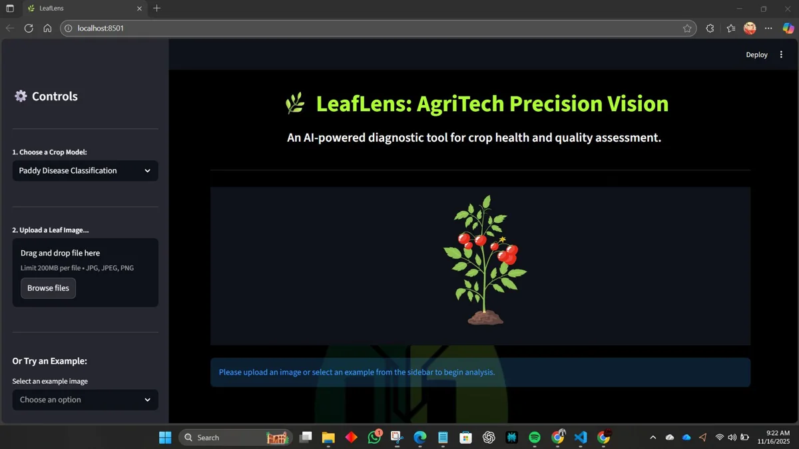
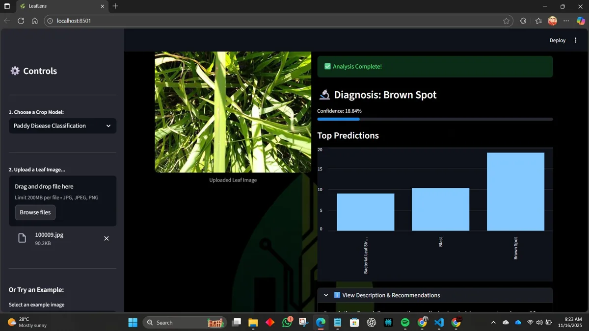

02 / Machine learning · Agriculture
LeafLens.
A crop-health prototype that turns leaf images into paddy disease and tea-quality assessments.
- Status
- Demonstrated prototype
- Context
- Agricultural image classification
- Technology
- Python · TensorFlow · Keras · Streamlit · Docker

01 / OVERVIEW
The problem
Farmers need understandable information about visible crop damage and leaf quality. A model alone is not a usable interface for that task.
The approach
LeafLens combines image classification with a Streamlit application for paddy disease and tea-quality assessment. The project includes model-training notebooks, model assets, and packaging for local use.
My contribution
Project work spanning the machine-learning pipeline and application delivery, documented in the public repository and profile.
02 / SYSTEM FLOW
How it connects
- 01Leaf image
- 02Image preprocessing
- 03TensorFlow / Keras model
- 04Streamlit assessment
A simplified overview of the implementation.
03 / ENGINEERING
Inside the implementation
- Separate paddy disease and tea-quality workflows.
- Transfer-learning-based image classification.
- An image-based interface with assessment guidance.
- Docker and standalone packaging documented by the project.
The engineering consideration
The engineering work extends beyond training: image preparation, model loading, and presenting the result all need to work together in an application people can use.

04 / SCOPE & STATUS
What this work demonstrates
Presented as an agricultural AI prototype. No independently verified field accuracy, yield improvement, or deployment impact is claimed. Image-based results need agricultural validation.